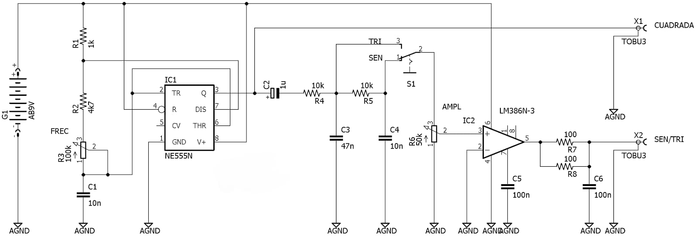

Diagrama del generador de señales analógico multifunción
El ensamblaje de este generador de señales analógicas en protoboard se puede dividir en varias etapas para facilitar su construcción y verificación.
1. Fuente de alimentación y conexiones básicas
Se comienza instalando la fuente de alimentación, en este caso una batería de 9V (G1), conectando el polo positivo y negativo a los rieles de la protoboard que funcionarán como V+ y tierra (AGND). Esto permite distribuir la energía de manera ordenada a todos los componentes del circuito.
2. Montaje del temporizador NE555
El siguiente paso es colocar el integrado NE555 (IC1) en la protoboard, asegurándose de que esté bien orientado. Se conectan las resistencias R1 (1kΩ) y R2 (4.7kΩ) y el potenciómetro R3 (100kΩ) junto con el condensador C1 (10nF) para formar la red RC que determinará la frecuencia de oscilación. Las conexiones de los pines del 555 deben realizarse siguiendo el diagrama, asegurando que cada terminal esté correctamente vinculado a los componentes y a la alimentación.
3. Acoplamiento y filtrado de la señal
Desde la salida del 555 (pin 3), se coloca el condensador C2 (1μF) para el acoplamiento de la señal. A partir de aquí, la señal pasa por las resistencias R4 y R5 (ambas de 10kΩ) y los condensadores C3 (47nF) y C4 (10nF), que forman los filtros RC encargados de transformar la onda cuadrada en señales triangulares y senoidales. Es importante ubicar estos componentes en la protoboard de forma secuencial para facilitar el seguimiento de la señal.
4. Selección de forma de onda
Se instala el interruptor S1, que permite seleccionar entre la salida triangular (TRI) y senoidal (SEN). El punto de conexión del interruptor se coloca después de los filtros, siguiendo el diagrama, y su salida se dirige al control de amplitud.
5. Control de amplitud y amplificación
A continuación, se conecta el potenciómetro R6 (50kΩ) para ajustar la amplitud de la señal seleccionada. Esta señal se dirige a la entrada del amplificador LM386 (IC2), que también debe ser colocado en la protoboard. Se agregan los condensadores C5 y C6 (ambos de 100nF) para desacoplar la alimentación y estabilizar el funcionamiento del amplificador.
6. Salidas del generador
Por último, se conectan las resistencias R7 y R8 (ambas de 100Ω en paralelo, formando una carga de 50Ω) a la salida del LM386, y se disponen los puntos de salida X1 (onda cuadrada directa del 555) y X2 (salida seleccionada entre senoidal o triangular amplificada). Ambas salidas deben estar claramente identificadas en la protoboard para facilitar su uso.
Este enfoque segmentado permite ensamblar el circuito de manera ordenada, verificando el funcionamiento de cada etapa antes de avanzar a la siguiente, lo que facilita la detección y corrección de posibles errores durante el montaje.
7. Señal de salida alternativa
se puede agregar un sistema visual para identificar la forma de onda que está activa mediante LEDs. Para ello, se conectan tres LEDs, cada uno representando una señal diferente: el LED verde para la señal cuadrada, el LED amarillo para la señal triangular y el LED rojo para la señal senoidal. Cada LED debe ir en serie con una resistencia de 330 ohmios conectada a tierra para limitar la corriente y proteger los LEDs. De esta forma, cuando la señal correspondiente esté activa, el LED asociado se encenderá, proporcionando una indicación visual clara y sencilla del tipo de onda que está siendo generada por el circuito. Esta implementación facilita la monitorización rápida del estado del generador sin necesidad de equipo adicional como un osciloscopio.
Video explicativo
Sigue explorando para conocer de forma visual el funcionamiento óptimo del circuito.